Introduction to MySQL
With well over 10 million installations, MySQL is probably the most popular database
management system for web servers. Developed in the mid-1990s, it’s now a mature
technology that powers many of today’s most-visited Internet destinations.
One reason for its success must be the fact that, like PHP, it’s free to use. But it’s also
extremely powerful and exceptionally fast—it can run on even the most basic of
hardware, and it hardly puts a dent in system resources.
MySQL is also highly scalable, which means that it can grow with your website (for
the latest benchmarks, see
http://mysql.com/why-mysql/benchmarks
).
MySQL Basics
A
database
is a structured collection of records or data stored in a computer system
and organized in such a way that it can be quickly searched and information can be
rapidly retrieved.
The
SQL
in MySQL stands for
Structured Query Language
. This language is loosely
based on English and also used in other databases such as Oracle and Microsoft SQL
Server. It is designed to allow simple requests from a database via commands such as
SELECT title FROM publications WHERE author = 'Charles Dickens';
A MySQL database contains one or more
tables
, each of which contains
records
or
rows
. Within these rows are various
columns
or
fields
that contain the data itself.
Table 8-1
shows the contents of an example database of five publications detailing the
author, title, type, and year of publication.
Table 8-1. Example of a simple database
| Author |
Title |
Type |
Year |
| Mark Twain |
The Adventures of Tom Sawyer |
Fiction |
1876 |
| Jane Austen |
Pride and Prejudice |
Fiction |
1811 |
| Charles Darwin |
The Origin of Species |
Nonfiction |
1856 |
| Charles Dickens |
The Old Curiosity Shop |
Fiction |
1841 |
| William Shakespeare |
Romeo and Juliet |
Play |
1594 |
Each row in the table is the same as a row in a MySQL table, and each element within
a row is the same as a MySQL field.
To uniquely identify this database, I’ll refer to it as the
publications
database in the
examples that follow. And, as you will have observed, all these publications are considered to be classics of literature, so I’ll call the table within the database that holds
the details
classics
.
Summary of Database Terms
The main terms you need to acquaint yourself with for now are as follows:
Database
The overall container for a collection of MySQL data
Table
A subcontainer within a database that stores the actual data
Row
A single record within a table, which may contain several fields
Column
The name of a field within a row
I should note that I’m not trying to reproduce the precise terminology used in academic literature about relational databases, but just to provide simple, everyday terms
to help you quickly grasp basic concepts and get started with a database.
Accessing MySQL via the Command Line
There are three main ways in which you can interact with MySQL: using a command
line, via a web interface such as phpMyAdmin, and through a programming language
like PHP. We’ll start doing the third of these in
Chapter 10
, but for now, let’s look at
the first two.
Starting the Command-Line Interface
The following sections describe relevant instructions for Windows, OS X, and Linux.
Windows users
If you installed XAMPP (as explained in
Chapter 2
), you will be able to access the
MySQL executable from the following directory:
C:\xampp\mysql\bin
If you installed XAMPP in a place other than
\xampp
, you will
need to use that directory instead.
By default, the initial MySQL user will be
root
and will not have had a password set.
Seeing as this is a development server that only you should be able to access, we won’t
worry about creating one yet.
So, to enter MySQL’s command-line interface, select Start→Run, enter
CMD
into the
Run box, and press Return. This will call up a Windows command prompt. From
there, enter one the following (making any appropriate changes as just discussed):
C:\xampp\mysql\bin\mysql -u root
This command tells MySQL to log you in as user
root
, without a password. You will
now be logged into MySQL and can start entering commands. So, to be sure everything is working as it should be, enter the following; the results should be similar to
Figure 8-1
:
SHOW databases;
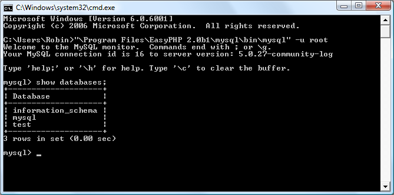
Figure 8-1. Accessing MySQL from a Windows command prompt
You are now ready to move on to the next section,
“Using the Command-Line Interface” on page 171
.
OS X users
To proceed with this chapter, you should have installed XAMPP as detailed in
Chapter 2
. You should also have the web server running and the MySQL server started.
To enter the MySQL command-line interface, start the Terminal program (which
should be available in Finder→Utilities). Then call up the MySQL program, which
will have been installed in the directory
/Applications/xampp/bin
.
By default, the initial MySQL user is
root
, and it will have a password of
root
too. So,
to start the program, type the following:
/Applications/xampp/bin/mysql -u root
This command tells MySQL to log you in as user
root
and not to request your password. To verify that all is well, type the following;
Figure 8-2
should be the result:
SHOW databases;
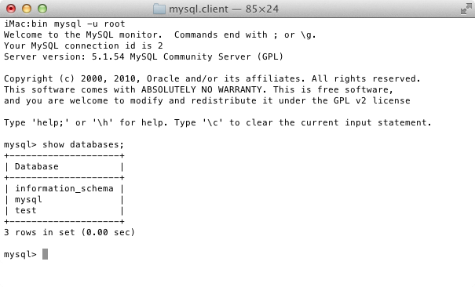
Figure 8-2. Accessing MySQL from the OS X Terminal program
If you receive an error such as “Can’t connect to local MySQL server through socket,”
you will need to first start the MySQL server as described in
Chapter 2
.
You should now be ready to move on to the next section,
“Using the Command-Line
Interface” on page 171
.
Linux users
On a system running a Unix-like operating system such as Linux, you will almost certainly already have PHP and MySQL installed and running, and you will be able to
enter the examples in the next section (if not, you can follow the procedure outlined
in
Chapter 2
to install XAMPP). First you should type the following to log into your
MySQL system:
mysql -u root -p
This tells MySQL to log you in as the user
root
and to request your password. If you
have a password, enter it; otherwise, just press Return.
Once you are logged in, type the following to test the program; you should see something like
Figure 8-3
in response:
SHOW databases;
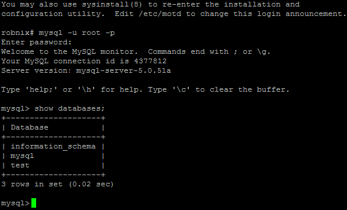
Figure 8-3. Accessing MySQL using Linux
If this procedure fails at any point, please refer to
Chapter 2
to ensure that you have
MySQL properly installed. Otherwise, you should now be ready to move on to the
next section,
“Using the Command-Line Interface” on page 171
.
MySQL on a remote server
If you are accessing MySQL on a remote server, you should Telnet (or preferably, for
security, use SSH) into the remote machine, which will probably be a Linux/FreeBSD/
Unix type of box. Once in there, you might find that things are a little different,
depending on how the system administrator has set the server up, especially if it’s a
shared hosting server. Therefore, you need to ensure that you have been given access
to MySQL and that you have your username and password. Armed with these, you
can then type the following, where
username
is the name supplied:
mysql -u username -p
Enter your password when prompted. You can then try the following command,
which should result in something like
Figure 8-3
:
SHOW databases;
There may be other databases already created, and the
test
database may not be there.
Bear in mind also that system administrators have ultimate control over everything
and that you can encounter some unexpected setups. For example, you may find that
you are required to preface all database names that you create with a unique identifying string to ensure that you do not conflict with databases created by other users.
Therefore, if you have any problems, talk with your system administrator, who will
get you sorted out. Just let the sysadmin know that you need a username and
password. You should also ask for the ability to create new databases or, at a minimum, to have at least one database created for you ready to use. You can then create
all the tables you require within that database.
Using the Command-Line Interface
From here on out, it makes no difference whether you are using Windows, Mac OS
X, or Linux to access MySQL directly, as all the commands used (and errors you may
receive) are identical.
The semicolon
Let’s start with the basics. Did you notice the semicolon (
;
) at the end of the
SHOW
databases;
command that you typed? The semicolon is used by MySQL to separate
or end commands. If you forget to enter it, MySQL will issue a prompt and wait for
you to do so. The required semicolon was made part of the syntax to let you enter
multiple-line commands, which can be convenient because some commands get quite
long. It also allows you to issue more than one command at a time by placing a semicolon after each one. The interpreter gets them all in a batch when you press the
Enter (or Return) key and executes them in order.
It’s very common to receive a MySQL prompt instead of the results
of your command; it means that you forgot the final semicolon.
Just enter the semicolon and press the Enter key, and you’ll get
what you want.
There are six different prompts that MySQL may present you with (see
Table 8-2
), so
you will always know where you are during a multiline input.
Table 8-2. MySQL’s six command prompts
| MySQL prompt |
Meaning |
| mysql> |
Ready and waiting for a command |
| -> |
Waiting for the next line of a command |
| '> |
Waiting for the next line of a string started with a single quote |
| "> |
Waiting for the next line of a string started with a double quote |
| `> |
Waiting for the next line of a string started with a back tick |
| /*> |
Waiting for the next line of a comment started with /* |
Canceling a command
If you are partway through entering a command and decide you don’t wish to execute
it after all, whatever you do,
don’t press Control-C
! That will close the program.
Instead, you can enter
\c
and press Return.
Example 8-1
shows how to use it.
Example 8-1. Canceling a line of input
meaningless gibberish to mysql \c
When you type that line, MySQL will ignore everything you typed and issue a new
prompt. Without the
\c
, it would have displayed an error message. Be careful,
though: if you have opened a string or comment, close it first before using the
\c
or
MySQL will think the
\c
is just part of the string.
Example 8-2
shows the right way to
do this.
Example 8-2. Canceling input from inside a string
this is "meaningless gibberish to mysql" \c
Also note that using
\c
after a semicolon will not work, as it is then a new statement.
MySQL Commands
You’ve already seen the
SHOW
command, which lists tables, databases, and many other
items. The commands you’ll use most often are listed in
Table 8-3
.
Table 8-3. Common MySQL commands
| Command |
Action |
| ALTER |
Alter a database or table |
| BACKUP |
Back up a table |
| \c |
Cancel input |
| CREATE |
Create a database |
| DELETE |
Delete a row from a table |
| DESCRIBE |
Describe a table’s columns |
| DROP |
Delete a database or table |
| EXIT (CTRL-C) |
Exit |
| GRANT |
Change user privileges |
| HELP (\h, \?) |
Display help |
| INSERT |
Insert data |
| LOCK |
Lock table(s) |
| QUIT (\q) |
Same as EXIT |
| RENAME |
Rename a table |
| SHOW |
List details about an object |
| SOURCE |
Execute a file |
| STATUS (\s) |
Display the current status |
| TRUNCATE |
Empty a table |
| UNLOCK |
Unlock table(s) |
| UPDATE |
Update an existing record |
| USE |
Use a database |
I’ll cover most of these as we proceed, but first, you need to remember a couple of
points about MySQL commands:
•
SQL commands and keywords are case-insensitive.
CREATE
,
create
, and
CrEaTe
all mean the same thing. However, for the sake of clarity, the recommended style
is to use uppercase.
•
Table names are case-sensitive on Linux and OS X, but case-insensitive on Windows. So for portability purposes, you should always choose a case and stick to it.
The recommended style is to use lowercase for tables.
Creating a database
If you are working on a remote server and have only a single user account and access
to a single database that was created for you, move on to the section
“Creating a table”
on page 175
. Otherwise, get the ball rolling by issuing the following command to create a new database called
publications
:
CREATE DATABASE publications;
A successful command will return a message that doesn’t mean much yet—
Query OK,
1 row affected (0.00 sec)
—
but will make sense soon. Now that you’ve created
the database, you want to work with it, so issue the following:
USE publications;
You should now see the message
Database changed
and will then be set to proceed
with the following examples.
Creating users
Now that you’ve seen how easy it is to use MySQL, and created your first database, it’s
time to look at how you create users, as you probably won’t want to grant your PHP
scripts root access to MySQL; it could cause a real headache should you get hacked.
To create a user, issue the
GRANT
command, which takes the following form (don’t
type this in; it’s not an actual working command):
GRANT PRIVILEGES ON database.object TO 'username'@'hostname'
IDENTIFIED BY 'password';
This should be pretty straightforward, with the possible exception of the
data
base.object
part, which refers to the database itself and the objects it contains, such
as tables (see
Table 8-4
).
Table 8-4. Example parameters for the GRANT command
| Arguments |
Meaning |
| *.* |
All databases and all their objects |
| database.* |
Only the database called database and all its objects |
| database.object |
Only the database called database and its object called object |
So let’s create a user who can access just the new
publications
database and all its
objects, by entering the following (replacing the username
jim
and also the password
mypasswd
with ones of your choosing):
GRANT ALL ON publications.* TO 'jim'@'localhost'
IDENTIFIED BY 'mypasswd';
What this does is allow the user
jim@localhost
full access to the
publications
database
using the password
mypasswd
. You can test whether this step has worked by entering
quit
to exit and then rerunning MySQL the way you did before, but instead of entering
-u root -p
, type
-u jim -p
, or whatever username you created. See
Table 8-5
for
the correct command for your operating system. Modify it as necessary if the
mysql
client program is installed in a different directory on your system.
Table 8-5. Starting MySQL and logging in as jim@localhost
| OS |
Example command |
| Windows |
C:\xampp\mysql\bin\mysql -u jim -p |
| Mac OS X |
/Applications/xampp/bin/mysql -u jim -p |
| Linux |
mysql -u jim –p |
All you have to do now is enter your password when prompted and you will be logged in. If you prefer, you can place your password immediately following the
-p
(without any spaces) to avoid having to enter it when prompted. But this is considered a poor practice, because if other people are logged into your system, there may
be ways for them to look at the command you entered and find out your password.
You can grant only privileges that you already have, and you must
also have the privilege to issue
GRANT
commands. There are a whole
range of privileges you can choose to grant if you are not granting
all privileges. For further details, please visit the following site,
which also covers the
REVOKE
command, which can remove privileges once granted:
http://tinyurl.com/mysqlgrant
. Also be aware
that if you create a new user but do not specify an
IDENTIFIED BY
clause, the user will have no password, a situation that is very insecure and should be avoided.
Creating a table
At this point, you should now be logged into MySQL with
ALL
privileges granted for
the database
publications
(or a database that was created for you), so you’re ready to
create your first table. Make sure the correct database is in use by typing the following
(replacing
publications
with the name of your database if it is different):
USE publications;
Now enter the commands in
Example 8-3
one line at a time.
Example 8-3. Creating a table called classics
CREATE TABLE classics (
author VARCHAR(128),
title VARCHAR(128),
type VARCHAR(16),
year CHAR(4)
) ENGINE MyISAM;
You could also issue this command on a single line, like this:
CREATE TABLE classics (author VARCHAR(128), title
VARCHAR(128), type VARCHAR(16), year CHAR(4)) ENGINE
MyISAM;
but MySQL commands can be long and complicated, so I recommend a single line at a time until you are comfortable with longer
ones.
MySQL should then issue the response
Query OK, 0 rows affected
, along with how
long it took to execute the command. If you see an error message instead, check your
syntax carefully. Every parenthesis and comma counts, and typing errors are easy to
make. In case you are wondering, the
ENGINE MyISAM
tells MySQL the type of database engine to use for this table.
To check whether your new table has been created, type the following:
DESCRIBE classics;
All being well, you will see the sequence of commands and responses shown in
Example 8-4
, where you should particularly note the table format displayed.
Example 8-4. A MySQL session: creating and checking a new table
mysql> USE publications;
Database changed
mysql> CREATE TABLE classics (
-> author VARCHAR(128),
-> title VARCHAR(128),
-> type VARCHAR(16),
-> year CHAR(4)) ENGINE MyISAM;
Query OK, 0 rows affected (0.03 sec)
mysql> DESCRIBE classics;
+--------+--------------+------+-----+---------+-------+
| Field | Type | Null | Key | Default | Extra |
+--------+--------------+------+-----+---------+-------+
| author | varchar(128) | YES | | NULL | |
| title | varchar(128) | YES | | NULL | |
| type | varchar(16) | YES | | NULL | |
| year | char(4) | YES | | NULL | |
+--------+--------------+------+-----+---------+-------+
4 rows in set (0.00 sec)
The
DESCRIBE
command is an invaluable debugging aid when you need to ensure that
you have correctly created a MySQL table. You can also use it to remind yourself
about a table’s field or column names and the types of data in each one. Let’s look at
each of the headings in detail:
Field
The name of each field or column within a table.
Type
The type of data being stored in the field.
Null
Whether a field is allowed to contain a value of NULL.
Key
MySQL supports keys or indexes , which are quick ways to look up and search for data. The Key heading shows what type of key (if any) has been applied.
Default
The default value that will be assigned to the field if no value is specified when a new row is created.
Extra
Additional information, such as whether a field is set to auto-increment.
Data Types
In
Example 8-3
, you may have noticed that three of the table’s fields were given the
data type of
VARCHAR
, and one was given the type
CHAR
. The term
VARCHAR
stands for
VARiable length
CHARacter string
, and the command takes a numeric value that tells
MySQL the maximum length allowed for a string stored in this field.
This data type is very useful, as MySQL can then plan the size of databases and perform lookups and searches more easily. The downside is that if you ever attempt to
assign a string value longer than the length allowed, it will be truncated to the maximum length declared in the table definition.
The
year
field, however, has more-predictable values, so instead of
VARCHAR
we use
the more efficient
CHAR(4)
data type. The parameter of
4
allows for 4 bytes of data,
supporting all years from –999 to 9999; a byte comprises 8 bits and can have the values 00000000 through 11111111, which are 0 to 255 in decimal.
You could, of course, just store two-digit values for the year, but if your data is going
to still be needed in the following century, or may otherwise wrap around, it will have
to be sanitized first—much like the “millennium bug” that would have caused dates
beginning on January 1, 2000, to be treated as 1900 on many of the world’s biggest
computer installations.
I didn’t use the
YEAR
data type in the
classics
table because it supports only the year 0000, and years 1901 through 2155. This is
because MySQL stores the year in a single byte for reasons of efficiency, but it also means that only 256 years are available, and the
publication years of the titles in the
classics
table are well before
this.
Both
CHAR
and
VARCHAR
accept text strings and impose a limit on the size of the field.
The difference is that every string in a
CHAR
field has the specified size. If you put in a
smaller string, it is padded with spaces. A
VARCHAR
field does not pad the text; it lets
the size of the field vary to fit the text that is inserted. But
VARCHAR
requires a small
amount of overhead to keep track of the size of each value. So
CHAR
is slightly more
efficient if the sizes are similar in all records, whereas
VARCHAR
is more efficient if
sizes can vary a lot and get large. In addition, the overhead causes access to
VARCHAR
data to be slightly slower than to
CHAR
data.
The CHAR data type
Table 8-6
lists the
CHAR
data types. All these types offer a parameter that sets the maximum (or exact) length of the string allowed in the field. As the table shows, each type
has a built-in maximum number of bytes it can occupy.
Table 8-6. MySQL’s CHAR data types
| Data type |
Bytes used |
Examples |
| CHAR(n) |
Exactly n(<= 255) |
CHAR(5)“Hello” uses 5 bytes
CHAR(57)“Goodbye” uses 57 bytes |
| VARCHAR(n) |
Up to n(<= 65535) |
VARCHAR(7)“Morning” uses 7 bytes
VARCHAR(100)“Night” uses 5 bytes |
The BINARY data type
The
BINARY
data type is used for storing strings of full bytes that do not have an associated character set. For example, you might use the
BINARY
data type to store a GIF
image (see
Table 8-7
).
Table 8-7. MySQL’s BINARY data types
| Data type |
Bytes used |
Examples |
| BINARY(n) or BYTE(n) |
Exactly n(<= 255) |
As CHAR but contains binary data |
| VARBINARY(n) |
Up to n(<= 65535) |
As VARCHAR but contains binary data |
The TEXT and VARCHAR data types
The differences between
TEXT
and
VARCHAR
are small:
•
Prior to version 5.0.3, MySQL would remove leading and trailing spaces from
VARCHAR
fields.
•
TEXT
fields cannot have default values.
•
MySQL indexes only the first
n
characters of a
TEXT
column (you specify
n
when
you create the index).
What this means is that
VARCHAR
is the better and faster data type to use if you need to
search the entire contents of a field. If you will never search more than a certain number of leading characters in a field, you should probably use a
TEXT
data type (see
Table 8-8
).
Table 8-8. MySQL’s TEXT data types
| Data type |
Bytes used |
Attributes |
| TINYTEXT(n) |
Up to n(<= 255) |
Treated as a string with a character set |
| TEXT(n) |
Up to n (<= 65535) |
Treated as a string with a character set |
| MEDIUMTEXT(n) |
Up to n (<= 1.67e+7) |
Treated as a string with a character set |
| LONGTEXT(n) |
Up to n (<= 4.29e+9) |
Treated as a string with a character set |
The BLOB data type
The term
BLOB
stands for
Binary
Large
OBject
and, therefore, as you would think, the
BLOB
data type is most useful for binary data in excess of 65,536 bytes in size. The
main other difference between the
BLOB
and
BINARY
data types is that
BLOB
s cannot
have default values (see
Table 8-9
).
Table 8-9. MySQL’s BLOB data types
| Data type |
Bytes used |
Attributes |
| TINYBLOB(n) |
Up to n (<= 255) |
Treated as binary data—no character set |
| BLOB(n) |
Up to n(<= 65535) |
Treated as binary data—no character set |
| MEDIUMBLOB(n) |
Up to n (<= 1.67e+7) |
Treated as binary data—no character set |
| LONGBLOB(n) |
Up to n (<= 4.29e+9) |
Treated as binary data—no character set |
Numeric data types
MySQL supports various numeric data types from a single byte up to double-
precision floating-point numbers. Although the most memory that a numeric field
can use up is 8 bytes, you are well advised to choose the smallest data type that will
adequately handle the largest value you expect. Your databases will be small and
quickly accessible.
Table 8-10
lists the numeric data types supported by MySQL and the ranges of values
they can contain. In case you are not acquainted with the terms, a
signed number
is
one with a possible range from a minus value, through 0, to a positive one; and an
unsigned
one has a value ranging from 0 to a positive one. They can both hold the
same number of values; just picture a signed number as being shifted halfway to the
left so that half its values are negative and half are positive. Note that floating-point
values (of any precision) may only be signed.
Table 8-10. MySQL’s numeric data types
| Data type |
Bytes used |
Minimum value |
Maximum value |
| Signed |
Unsigned |
Signed |
Unsigned |
| TINYINT |
1 |
–128 |
0 |
127 |
255 |
| SMALLINT |
2 |
–32768 |
0 |
32767 |
65535 |
| MEDIUMINT |
3 |
–8.38e+6 |
0 |
8.38e+6 |
1.67e+7 |
| INT/INTEGER |
4 |
–2.15e+9 |
0 |
2.15e+9 |
4.29e+9 |
| BIGINT |
8 |
–9.22e+18 |
0 |
9.22e+18 |
1.84e+19 |
| FLOAT |
4 |
–3.40e+38 |
n/a |
3.4e+38 |
n/a |
| DOUBLE/REAL |
8 |
–1.80e+308 |
n/a |
1.80e+308 |
n/a |
To specify whether a data type is signed or unsigned, use the
UNSIGNED
qualifier. The
following example creates a table called
tablename
with a field in it called
fieldname
of
the data type
UNSIGNED INTEGER
:
CREATE TABLE tablename (fieldname INT UNSIGNED);
When creating a numeric field, you can also pass an optional number as a parameter,
like this:
CREATE TABLE tablename (fieldname INT(4));
But you must remember that, unlike
BINARY
and
CHAR
data types, this parameter does
not indicate the number of bytes of storage to use. It may seem counterintuitive, but
what the number actually represents is the display width of the data in the field when
it is retrieved. It is commonly used with the
ZEROFILL
qualifier, like this:
CREATE TABLE tablename (fieldname INT(4) ZEROFILL);
What this does is cause any numbers with a width of less than four characters to be
padded with one or more zeros, sufficient to make the display width of the field four
characters long. When a field is already of the specified width or greater, no padding
takes place.
DATE and TIME
The main remaining data types supported by MySQL relate to the date and time and
can be seen in
Table 8-11
.
Table 8-11. MySQL’s DATE and TIME data types
| Data type |
Time/date format |
| DATETIME |
'0000-00-00 00:00:00' |
| DATE |
'0000-00-00' |
| TIMESTAMP |
'0000-00-00 00:00:00' |
| TIME |
'00:00:00' |
| YEAR |
0000(Only years 0000 and 1901–2155) |
The
DATETIME
and
TIMESTAMP
data types display the same way. The main difference is
that
TIMESTAMP
has a very narrow range (from the years 1970 through 2037), whereas
DATETIME
will hold just about any date you’re likely to specify, unless you’re interested
in ancient history or science fiction.
TIMESTAMP
is useful, however, because you can let MySQL set the value for you. If you
don’t specify the value when adding a row, the current time is automatically inserted.
You can also have MySQL update a
TIMESTAMP
column each time you change a row.
The AUTO_INCREMENT data type
Sometimes you need to ensure that every row in your database is guaranteed to be
unique. You could do this in your program by carefully checking the data you enter
and making sure that there is at least one value that differs in any two rows, but this
approach is error-prone and works only in certain circumstances. In the
classics
table,
for instance, an author may appear multiple times. Likewise, the year of publication
will also be frequently duplicated, and so on. It would be hard to guarantee that you
have no duplicate rows.
The general solution is to use an extra column just for this purpose. In a while, we’ll
look at using a publication’s ISBN (International Standard Book Number), but first I’d
like to introduce the
AUTO_INCREMENT
data type.
As its name implies, a column given this data type will set the value of its contents to
that of the column entry in the previously inserted row, plus 1.
Example 8-5
shows
how to add a new column called
id
to the table
classics
with auto-incrementing.
Example 8-5. Adding the auto-incrementing column id
ALTER TABLE classics ADD id INT UNSIGNED NOT NULL AUTO_INCREMENT KEY;
This is your introduction to the
ALTER
command, which is very similar to
CREATE
.
ALTER
operates on an existing table, and can add, change, or delete columns. Our
example adds a column named
id
with the following characteristics:
INT UNSIGNED
Makes the column take an integer large enough for you to store more than 4 billion records in the table.
NOT NULL
Ensures that every column has a value. Many programmers use
NULL
in a field to
indicate that it doesn’t have any value. But that would allow duplicates, which would
violate the whole reason for this column’s existence. So we disallow
NULL
values.
AUTO_INCREMENT
Causes MySQL to set a unique value for this column in every row, as described earlier. We don’t really have control over the value that this column will take in each row,
but we don’t care: all we care about is that we are guaranteed a unique value.
KEY
An auto-increment column is useful as a key, because you will tend to search for rows
based on this column. This will be explained in the section
“Indexes” on page 186.
Each entry in the column
id
will now have a unique number, with the first starting at
1 and the others counting upward from there. And whenever a new row is inserted,
its
id
column will automatically be given the next number in sequence.
Rather than applying the column retroactively, you could have included it by issuing
the
CREATE
command in a slightly different format. In that case, the command in
Example 8-3
would be replaced with
Example 8-6
. Check the final line in particular.
Example 8-6. Adding the auto-incrementing id column at table creation
CREATE TABLE classics (
author VARCHAR(128),
title VARCHAR(128),
type VARCHAR(16),
year CHAR(4),
id INT UNSIGNED NOT NULL AUTO_INCREMENT KEY) ENGINE MyISAM;
If you wish to check whether the column has been added, use the following command to view the table’s columns and data types:
DESCRIBE classics;
Now that we’ve finished with it, the
id
column is no longer needed, so if you created it
using
Example 8-5
, you should now remove the column using the command in
Example 8-7
.
Example 8-7. Removing the id column
ALTER TABLE classics DROP id;
Adding data to a table
To add data to a table, use the
INSERT
command. Let’s see this in action by populating
the table
classics
with the data from
Table 8-1
, using one form of the
INSERT
command repeatedly (
Example 8-8
).
Example 8-8. Populating the classics table
INSERT INTO classics(author, title, type, year)
VALUES('Mark Twain','The Adventures of Tom Sawyer','Fiction','1876');
INSERT INTO classics(author, title, type, year)
VALUES('Jane Austen','Pride and Prejudice','Fiction','1811');
INSERT INTO classics(author, title, type, year)
VALUES('Charles Darwin','The Origin of Species','Non-Fiction','1856');
INSERT INTO classics(author, title, type, year)
VALUES('Charles Dickens','The Old Curiosity Shop','Fiction','1841');
INSERT INTO classics(author, title, type, year)
VALUES('William Shakespeare','Romeo and Juliet','Play','1594');
After every second line, you should see a
Query OK
message. Once all lines have been
entered, type the following command, which will display the table’s contents. The
result should look like
Figure 8-4
:
SELECT * FROM classics;
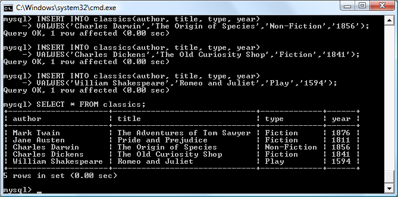
Figure 8-4. Populating the classics table and viewing its contents
Don’t worry about the
SELECT
command for now—we’ll come to it in the section
“
Querying a MySQL Database” on page 192
. Suffice it to say that, as typed, it will display all the data you just entered.
Let’s go back and look at how we used the
INSERT
command. The first part,
INSERT
INTO classics
, tells MySQL where to insert the following data. Then, within parentheses, the four column names are listed—
author
,
title
,
type
, and
year
—all separated
by commas. This tells MySQL that these are the fields into which the data is to be
inserted.
The second line of each
INSERT
command contains the keyword
VALUES
followed by
four strings within parentheses, and separated by commas. This supplies MySQL with
the four values to be inserted into the four columns previously specified. (As always,
my choice of where to break the lines was arbitrary.)
Each item of data will be inserted into the corresponding column, in a one-to-one
correspondence. If you accidentally listed the columns in a different order from the
data, the data would go into the wrong columns. And the number of columns must
match the number of data items.
Renaming a table
Renaming a table, like any other change to the structure or meta information about a
table, is achieved via the
ALTER
command. So, for example, to change the name of
table
classics
to
pre1900
, use the following command:
ALTER TABLE classics RENAME pre1900;
If you tried that command, you should revert the table name by entering the following, so that later examples in this chapter will work as printed:
ALTER TABLE pre1900 RENAME classics;
Changing the data type of a column
Changing a column’s data type also makes use of the
ALTER
command, this time in
conjunction with the
MODIFY
keyword. So to change the data type of column
year
from
CHAR(4)
to
SMALLINT
(which requires only 2 bytes of storage and so will save
disk space), enter the following:
ALTER TABLE classics MODIFY year SMALLINT;
When you do this, if the conversion of data type makes sense to MySQL, it will automatically change the data while keeping the meaning. In this case, it will change each
string to a comparable integer, and so on, as the string is recognizable as referring to
an integer.
Adding a new column
Let’s suppose that you have created a table and populated it with plenty of data, only
to discover you need an additional column. Not to worry. Here’s how to add the new
column
pages
, which will be used to store the number of pages in a publication:
ALTER TABLE classics ADD pages SMALLINT UNSIGNED;
This adds the new column with the name
pages
using the
UNSIGNED SMALLINT
data
type, sufficient to hold a value of up to 65,535—hopefully that’s more than enough for
any book ever published!
And, if you ask MySQL to describe the updated table by using the
DESCRIBE
command, as follows, you will see the change has been made (see
Figure 8-5
):
DESCRIBE classics;
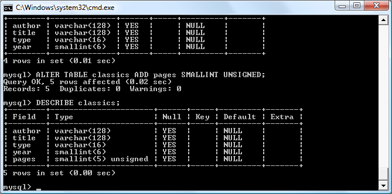
Figure 8-5. Adding the new pages column and viewing the table
Renaming a column
Looking again at
Figure 8-5
, you may decide that having a column named
type
can be
confusing, because that is the name used by MySQL to identify data types. Again, no
problem—let’s change its name to
category
, like this:
ALTER TABLE classics CHANGE type category VARCHAR(16);
Note the addition of
VARCHAR(16)
on the end of this command. That’s because the
CHANGE
keyword requires the data type to be specified, even if you don’t intend to
change it, and
VARCHAR(16)
was the data type specified when that column was initially created as
type
.
Removing a column
Actually, upon reflection, you might decide that the page count column
pages
isn’t
actually all that useful for this particular database, so here’s how to remove that column by using the
DROP
keyword:
ALTER TABLE classics DROP pages;
Remember that
DROP
is irreversible and you should always use it
with caution, because you could inadvertently delete entire tables
(and even databases) with it if you are not careful!
Deleting a table
Deleting a table is very easy indeed. But, because I don’t want you to have to reenter
all the data for the
classics
table, let’s quickly create a new table, verify its existence,
and then delete it by typing the commands in
Example 8-9
. The result of these four
commands should look like
Figure 8-6
.
Example 8-9. Creating, viewing, and deleting a table
CREATE TABLE disposable(trash INT);
DESCRIBE disposable;
DROP TABLE disposable;
SHOW tables;
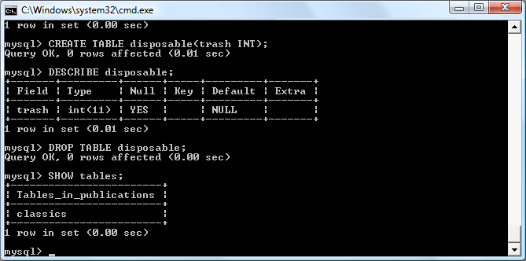
Figure 8-6. Creating, viewing, and deleting a table
Indexes
As things stand, the table
classics
works and can be searched without problem by
MySQL—until it grows to more than a couple of hundred rows, that is. At that point,
database accesses will get slower and slower with every new row added, because
MySQL has to search through every row whenever a query is issued. This is like
searching through every book in a library whenever you need to look something up.
Of course, you don’t have to search libraries that way, because they have either a card
index system or, most likely, a database of their own. And the same goes for MySQL,
because at the expense of a slight overhead in memory and disk space, you can create
a “card index” for a table that MySQL will use to conduct lightning-fast searches.
Creating an Index
The way to achieve fast searches is to add an
index
, either when creating a table or at
any time afterward. But the decision is not so simple. For example, there are different
index types such as a regular
INDEX
,
PRIMARY KEY
, and
FULLTEXT
. Also, you must
decide which columns require an index, a judgment that requires you to predict
whether you will be searching any of the data in that column. Indexes can also get
complicated, because you can combine multiple columns in one index. And even
when you’ve decided that, you still have the option of reducing index size by limiting
the amount of each column to be indexed.
If we imagine the searches that may be made on the
classics
table, it becomes apparent
that all of the columns may need to be searched. However, if the
pages
column created
in the section
“Adding a new column” on page 184
had not been deleted, it would
probably not have needed an index, as most people would be unlikely to search for
books by the number of pages they have. Anyway, go ahead and add an index to each
of the columns, using the commands in
Example 8-10
.
Example 8-10. Adding indexes to the classics table
ALTER TABLE classics ADD INDEX(author(20));
ALTER TABLE classics ADD INDEX(title(20));
ALTER TABLE classics ADD INDEX(category(4));
ALTER TABLE classics ADD INDEX(year);
DESCRIBE classics;
The first two commands create indexes on both the
author
and
title
columns, limiting
each index to only the first 20 characters. For instance, when MySQL indexes the following title:
The Adventures of Tom Sawyer
It will actually store in the index only the first 20 characters:
The Adventures of To
This is done to minimize the size of the index, and to optimize database access speed.
I chose 20 because it’s likely to be sufficient to ensure uniqueness for most strings in
these columns. If MySQL finds two indexes with the same contents, it will have to
waste time going to the table itself and checking the column that was indexed to find
out which rows really matched.
With the
category
column, currently only the first character is required to identify a
string as unique (F for Fiction, N for Nonfiction, and P for Play), but I chose an index
of four characters to allow for future category types that may be unique only after
four characters. You can also re-index this column later, when you have a more complete set of categories. And finally, I set no limit to the
year
column’s index, because
it’s an integer, not a string.
The results of issuing these commands (and a
DESCRIBE
command to confirm that
they worked) can be seen in
Figure 8-7
, which shows the key
MUL
for each column.
This key means that multiple occurrences of a value may occur within that column,
which is exactly what we want, as authors may appear many times, the same book
title could be used by multiple authors, and so on.
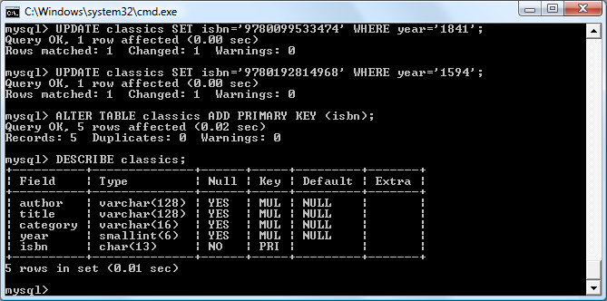
Figure 8-7. Adding indexes to the classics table
Using CREATE INDEX
An alternative to using
ALTER TABLE
to add an index is to use the
CREATE INDEX
command. They are equivalent, except that
CREATE INDEX
cannot be used for creating a
PRIMARY KEY
(see the section
“Primary keys” on page 189
). The format of this command is shown in the second line of
Example 8-11
.
Example 8-11.
These two commands are equivalent
ALTER TABLE classics ADD INDEX(author(20));
CREATE INDEX author ON classics (author(20));
Adding indexes when creating tables
You don’t have to wait until after creating a table to add indexes. In fact, doing so can
be time-consuming, as adding an index to a large table can take a very long time.
Therefore, let’s look at a command that creates the table
classics
with indexes already
in place.
Example 8-12
is a reworking of
Example 8-3
in which the indexes are created at the
same time as the table. Note that to incorporate the modifications made in this chapter, this version uses the new column name
category
instead of
type
and sets the data
type of
year
to
SMALLINT
instead of
CHAR(4)
. If you want to try it out without first
deleting your current
classics
table, change the word
classics
in line 1 to something
else like
classics1
, and then drop
classics1
after you have finished with it.
Example 8-12. Creating the table classics with indexes
CREATE TABLE classics (
author VARCHAR(128),
title VARCHAR(128),
category VARCHAR(16),
year SMALLINT,
INDEX(author(20)),
INDEX(title(20)),
INDEX(category(4)),
INDEX(year)) ENGINE MyISAM;
Primary keys
So far, you’ve created the table
classics
and ensured that MySQL can search it quickly
by adding indexes, but there’s still something missing. All the publications in the table
can be searched, but there is no single unique key for each publication to enable
instant accessing of a row. The importance of having a key with a unique value for
each row will come up when we start to combine data from different tables.
The section
“The AUTO_INCREMENT data type” on page 181
briefly introduced the
idea of a primary key when creating the auto-incrementing column
id
, which could
have been used as a primary key for this table. However, I wanted to reserve that task
for a more appropriate column: the internationally recognized ISBN.
So let’s go ahead and create a new column for this key. Now, bearing in mind that
ISBNs are 13 characters long, you might think that the following command would do
the job:
ALTER TABLE classics ADD isbn CHAR(13) PRIMARY KEY;
But it doesn’t. If you try it, you’ll get the error
Duplicate entry
for key 1. The reason
is that the table is already populated with some data and this command is trying to
add a column with the value
NULL
to each row, which is not allowed, as all values
must be unique in any column having a primary key index. However, if there were no
data already in the table, this command would work just fine, as would adding the
primary key index upon table creation.
In our current situation, we have to be a bit sneaky and create the new column
without an index, populate it with data, and then add the index retrospectively using
the commands in
Example 8-13
. Luckily, each of the years is unique in the current set
of data, so we can use the
year
column to identify each row for updating. Note that
this example uses the
UPDATE
and
WHERE
keywords, which are explained in more detail
in the section
“Querying a MySQL Database” on page 192
.
Example 8-13. Populating the isbn column with data and using a primary key
ALTER TABLE classics ADD isbn CHAR(13);
UPDATE classics SET isbn='9781598184891' WHERE year='1876';
UPDATE classics SET isbn='9780582506206' WHERE year='1811';
UPDATE classics SET isbn='9780517123201' WHERE year='1856';
UPDATE classics SET isbn='9780099533474' WHERE year='1841';
UPDATE classics SET isbn='9780192814968' WHERE year='1594';
ALTER TABLE classics ADD PRIMARY KEY(isbn);
DESCRIBE classics;
Once you have typed these commands, the results should look like
Figure 8-8
. Note
that the keywords
PRIMARY KEY
replace the keyword
INDEX
in the
ALTER TABLE
syntax
(compare
Example 8-10
and
Example 8-13
).
Figure 8-8. Retrospectively adding a primary key to the classics table
To have created a primary key when the table
classics
was created, you could have
used the commands in
Example 8-14
. Again, rename
classics
in line 1 to something
else if you wish to try this example, and then delete the test table afterward.
Example 8-14. Creating the table classics with a primary key
CREATE TABLE classics (
author VARCHAR(128),
title VARCHAR(128),
category VARCHAR(16),
year SMALLINT,
isbn CHAR(13),
INDEX(author(20)),
INDEX(title(20)),
INDEX(category(4)),
INDEX(year),
PRIMARY KEY (isbn)) ENGINE MyISAM;
Creating a FULLTEXT index
Unlike a regular index, MySQL’s
FULLTEXT
allows super-fast searches of entire columns of text. It stores every word in every data string in a special index that you can
search using “natural language,” in a similar manner to using a search engine.
It’s not strictly true that MySQL stores
all
the words in a
FULLTEXT
index, because it has a built-in list of more than 500 words that it
chooses to ignore because they are so common that they aren’t very
helpful for searching anyway. This list, called
stopwords
, includes
the
,
as
,
is
,
of
, and so on. The list helps MySQL run much more
quickly when performing a
FULLTEXT
search and keeps database
sizes down.
Appendix C
contains the full list of stopwords.
Here are some things that you should know about
FULLTEXT
indexes:
•
FULLTEXT
indexes can be used only with MyISAM tables, the type used by
MySQL’s default storage engine (MySQL supports at least 10 different storage
engines). If you need to convert a table to MyISAM, you can usually use the
MySQL command
ALTER TABLE tablename ENGINE = MyISAM;
.
•
FULLTEXT
indexes can be created for
CHAR
,
VARCHAR
, and
TEXT
columns only.
•
A
FULLTEXT
index definition can be given in the
CREATE TABLE
statement when a
table is created, or added later using
ALTER TABLE
(or
CREATE INDEX
).
•
For large data sets, it is
much
faster to load your data into a table that has no
FULLTEXT
index and then create the index than to load data into a table that has
an existing
FULLTEXT
index.
To create a
FULLTEXT
index, apply it to one or more records as in
Example 8-15
,
which adds a
FULLTEXT
index to the pair of columns
author
and
title
in the
classics
table (this index is in addition to the ones already created and does not affect them).
Example 8-15. Adding a FULLTEXT index to the table classics
ALTER TABLE classics ADD FULLTEXT(author,title);
You can now perform
FULLTEXT
searches across this pair of columns. This feature
could really come into its own if you could now add the entire text of these publications to the database (particularly as they’re out of copyright protection) and they
would be fully searchable. See the section
“MATCH...AGAINST” on page 197
for a
description of searches using
FULLTEXT
.
If you find that MySQL is running slower than you think it should
be when accessing your database, the problem is usually related to
your indexes. Either you don’t have an index where you need one,
or
the
indexes
are
not
optimally
designed.
Tweaking
a
table’s
indexes will often solve such a problem. Performance is beyond the
scope of this book, but in
Chapter 9
I’ll give you a few tips so you
know what to look for.
Querying a MySQL Database
So far, we’ve created a MySQL database and tables, populated them with data, and
added indexes to make them fast to search. Now it’s time to look at how these
searches are performed, and the various commands and qualifiers available.
SELECT
As you saw in
Figure 8-4
, the
SELECT
command is used to extract data from a table. In
that section, I used its simplest form to select all data and display it—something you
will never want to do on anything but the smallest tables, because all the data will
scroll by at an unreadable pace. Let’s now examine
SELECT
in more detail.
The basic syntax is as follows:
SELECT something FROM tablename;
The
something
can be an
*
(asterisk) as you saw before, which means
every column
,
or you can choose to select only certain columns. For instance,
Example 8-16
shows
how to select just the
author
and
title
and just the
title
and
isbn
. The result of typing
these commands can be seen in
Figure 8-9
.
Example 8-16. Two
different SELECT statements
SELECT author,title FROM classics;
SELECT title,isbn FROM classics;
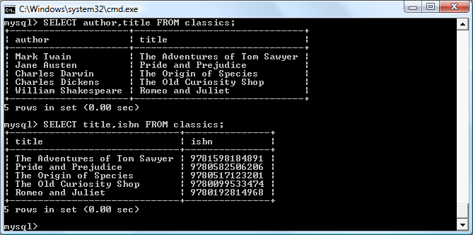
Figure 8-9. The output from two different SELECT statements
SELECT COUNT
Another replacement for the
something
parameter is
COUNT
, which can be used in
many ways. In
Example 8-17
, it displays the number of rows in the table by passing
*
as a parameter, which means
all rows
. As you’d expect, the result returned is
5
, as
there are five publications in the table.
Example 8-17. Counting rows
SELECT COUNT(*) FROM classics;
SELECT DISTINCT
This qualifier (and its synonym DISTINCTROW) allows you to weed out multiple entries
when they contain the same data. For instance, suppose that you want a list of all
authors in the table. If you select just the
author
column from a table containing multiple books by the same author, you’ll normally see a long list with the same author
names over and over. But by adding the
DISTINCT
keyword, you can show each
author just once. So let’s test that out by adding another row that repeats one of our
existing authors (
Example 8-18
).
Example 8-18. Duplicating data
INSERT INTO classics(author, title, category, year, isbn)
VALUES('Charles Dickens','Little Dorrit','Fiction','1857', '9780141439969');
Now that Charles Dickens appears twice in the table, we can compare the results of
using
SELECT
with and without the
DISTINCT
qualifier.
Example 8-19
and
Figure 8-10
show that the simple
SELECT
lists Dickens twice, and the command with the
DISTINCT
qualifier shows him only once.
Example 8-19. With and without the DISTINCT
qualifier
SELECT author FROM classics;
SELECT DISTINCT author FROM classics;
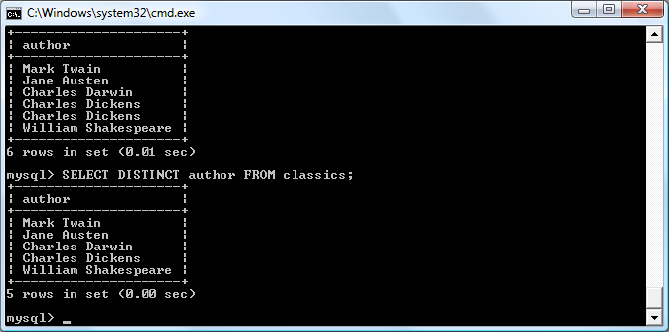
Figure 8-10. Selecting data with and without DISTINCT
DELETE
When you need to remove a row from a table, use the
DELETE
command. Its syntax is
similar to the
SELECT
command and allows you to narrow down the exact row or
rows to delete using qualifiers such as
WHERE
and
LIMIT
.
Now that you’ve seen the effects of the
DISTINCT
qualifier, if you typed
Example 8-18
,
you should remove
Little Dorrit
by entering the commands in
Example 8-20
.
Example 8-20. Removing the new entry
DELETE FROM classics WHERE title='Little Dorrit';
This example issues a
DELETE
command for all rows whose
title
column contains the
string
Little Dorrit
.
The
WHERE
keyword is very powerful, and important to enter correctly; an error could
lead a command to the wrong rows (or have no effect in cases where nothing matches
the
WHERE
clause). So now we’ll spend some time on that clause, which is the heart
and soul of SQL.
WHERE
The
WHERE
keyword enables you to narrow down queries by returning only those
where
a certain expression is true.
Example 8-20
returns only the rows where the column
exactly
matches
the
string
Little Dorrit
,
using
the
equality
operator
=
.
Example 8-21
shows a couple more examples of using
WHERE
with
=
.
Example 8-21. Using the WHERE keyword
SELECT author,title FROM classics WHERE author="Mark Twain";
SELECT author,title FROM classics WHERE isbn="9781598184891 ";
Given our current table, the two commands in
Example 8-21
display the same results.
But we could easily add more books by Mark Twain, in which case the first line would
display all titles he wrote and the second line would continue (because we know the
ISBN is unique) to display
The Adventures of Tom Sawyer
. In other words, searches
using a unique key are more predictable, and you’ll see further evidence later of the
value of unique and primary keys.
You can also do pattern matching for your searches using the
LIKE
qualifier, which
allows searches on parts of strings. This qualifier should be used with a
%
character
before or after some text. When placed before a keyword,
%
means
anything before
.
After a keyword, it means
anything
after
.
Example 8-22
performs three different queries, one for the start of a string, one for the end, and one for anywhere in a string. You
can see the results of these commands in
Figure 8-11
.
Example 8-22. Using the LIKE
qualifier
SELECT author,title FROM classics WHERE author LIKE "Charles%";
SELECT author,title FROM classics WHERE title LIKE "%Species";
SELECT author,title FROM classics WHERE title LIKE "%and%";
The first command outputs the publications by both Charles Darwin and Charles
Dickens because the
LIKE
qualifier was set to return anything matching the string
Charles
followed by any other text. Then just
The Origin of Species
is returned,
because it’s the only row whose column ends with the string
Species
. Last, both
Pride and Prejudice
and
Romeo and Juliet
are returned, because they both
matched the string
and
anywhere in the column.
The
%
will also match if there is nothing in the position it occupies; in other words, it
can match an empty string.
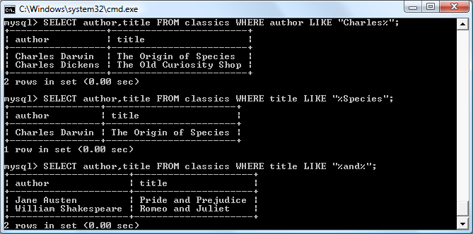
Figure 8-11. Using WHERE with the LIKE qualifier
LIMIT
The
LIMIT
qualifier enables you to choose how many rows to return in a query, and
where in the table to start returning them. When passed a single parameter, it tells
MySQL to start at the beginning of the results and just return the number of rows
given in that parameter. If you pass it two parameters, the first indicates the offset
from the start of the results where MySQL should start the display, and the second
indicates how many to return. You can think of the first parameter as saying, “Skip
this number of results at the start.”
Example 8-23
includes three commands. The first returns the first three rows from
the table. The second returns two rows starting at position 1 (skipping the first row).
The last command returns a single row starting at position 3 (skipping the first three
rows).
Figure 8-12
shows the results of issuing these three commands.
Example 8-23. Limiting the number of results returned
SELECT author,title FROM classics LIMIT 3;
SELECT author,title FROM classics LIMIT 1,2;
SELECT author,title FROM classics LIMIT 3,1;
Be careful with the
LIMIT
keyword, because offsets start at 0, but
the number of rows to return starts at 1. So
LIMIT 1,3
means
return
three
rows starting from the
second
row.
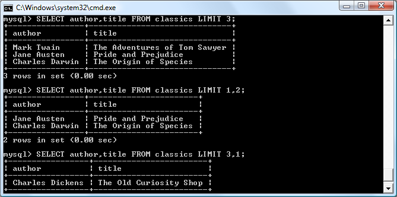
Figure 8-12. Restricting the rows returned with LIMIT
MATCH...AGAINST
The
MATCH...AGAINST
construct can be used on columns that have been given a
FULL
TEXT
index (see the section
“Creating a FULLTEXT index” on page 191
). With it, you
can make natural-language searches as you would in an Internet search engine.
Unlike the use of
WHERE...=
or
WHERE...LIKE
,
MATCH...AGAINST
lets you enter multiple words in a search query and checks them against all words in the
FULLTEXT
columns.
FULLTEXT
indexes are case-insensitive, so it makes no difference what case is
used in your queries.
Assuming that you have added a
FULLTEXT
index to the
author
and
title
columns,
enter the three queries shown in
Example 8-24
. The first asks for any of these columns that contain the word
and
to be returned. Because
and
is a stopword, MySQL
will ignore it and the query will always produce an empty set—no matter what is
stored in the columns. The second query asks for any rows that contain both of the
words
curiosity
and
shop
anywhere in them, in any order, to be returned. And the last
query applies the same kind of search for the words
tom
and
sawyer
.
Figure 8-13
shows the results of these queries.
Example 8-24. Using MATCH...AGAINST on FULLTEXT indexes
SELECT author,title FROM classics
WHERE MATCH(author,title) AGAINST('and');
SELECT author,title FROM classics
WHERE MATCH(author,title) AGAINST('curiosity shop');
SELECT author,title FROM classics
WHERE MATCH(author,title) AGAINST('tom sawyer');
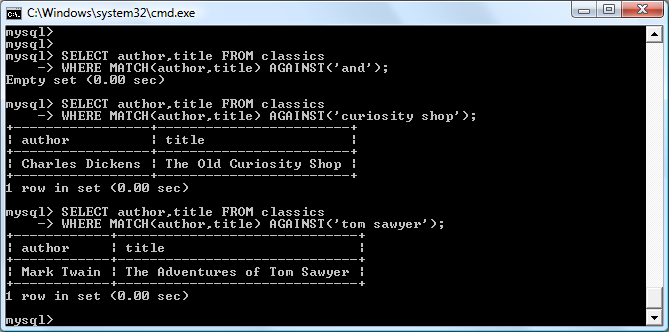
Figure 8-13. Using MATCH...AGAINST on a FULLTEXT index
MATCH...AGAINST...in Boolean Mode
If you wish to give your
MATCH...AGAINST
queries even more power, use Boolean
mode. This changes the effect of the standard
FULLTEXT
query so that it searches for
any combination of search words, instead of requiring all search words to be in the
text. The presence of a single word in a column causes the search to return the row.
Boolean mode also allows you to preface search words with a
+
or
-
sign to indicate
whether they must be included or excluded. If normal Boolean mode says, “Any of
these words will do,” a plus sign means, “This word must be present; otherwise, don’t
return the row.” A minus sign means, “This word must not be present; its presence
disqualifies the row from being returned.”
Example 8-25
illustrates Boolean mode through two queries. The first asks for all
rows containing the word
charles
and not the word
species
to be returned. The second
uses double quotes to request that all rows containing the exact phrase
origin of
be
returned.
Figure 8-14
shows the results of these queries.
Example 8-25. Using MATCH...AGAINST...in Boolean Mode
SELECT author,title FROM classics
WHERE MATCH(author,title)
AGAINST('+charles -species' IN BOOLEAN MODE);
SELECT author,title FROM classics
WHERE MATCH(author,title)
AGAINST('"origin of"' IN BOOLEAN MODE);
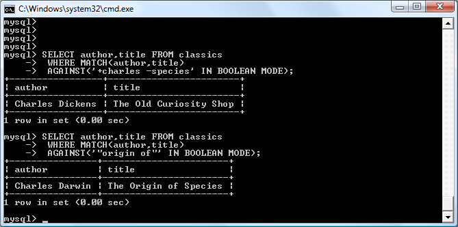
Figure 8-14. Using MATCH...AGAINST...in Boolean Mode
As you would expect, the first request returns only
The Old Curiosity Shop
by
Charles Dickens, because any rows containing the word
species
have been excluded,
so Charles Darwin’s publication is ignored.
There is something of interest to note in the second query: the
stopword
of
is part of the search string, but is still used by the
search because the double quotation marks override stopwords.
UPDATE...SET
This construct allows you to update the contents of a field. If you wish to change the
contents of one or more fields, you need to first narrow in on just the field or fields to
be changed, in much the same way you use the
SELECT
command.
Example 8-26
shows the use of
UPDATE...SET
in two different ways. You can see the results in
Figure 8-15
.
Example 8-26. Using UPDATE...SET
UPDATE classics SET author='Mark Twain (Samuel Langhorne Clemens)'
WHERE author='Mark Twain';
UPDATE classics SET category='Classic Fiction'
WHERE category='Fiction';
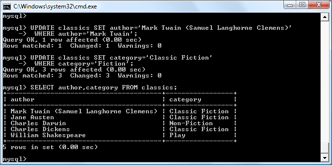
Figure 8-15. Updating columns in the classics table
In the first query, Mark Twain’s real name of Samuel Langhorne Clemens was
appended to his pen name in brackets, which affected only one row. The second
query, however, affected three rows, because it changed all occurrences of the word
Fiction
in the
category
column to the term
Classic Fiction
.
When performing an update, you can also make use of the qualifiers you have already
seen, such as
LIMIT
, and the following
ORDER BY
and
GROUP BY
keywords.
ORDER BY
ORDER BY
sorts returned results by one or more columns in ascending or descending
order.
Example 8-27
shows two such queries, the results of which can be seen in
Figure 8-16
.
Example 8-27. Using ORDER BY
SELECT author,title FROM classics ORDER BY author;
SELECT author,title FROM classics ORDER BY title DESC;
As you can see, the first query returns the publications by
author
in ascending alphabetical order (the default), and the second returns them by
title
in descending order.
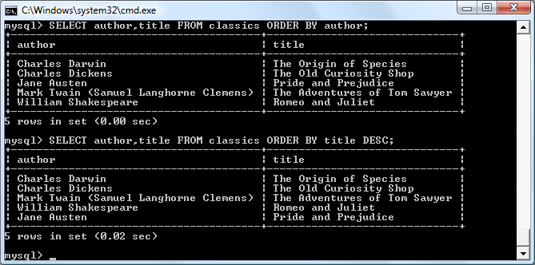
Figure 8-16. Sorting the results of requests
If you wanted to sort all the rows by
author
and then by descending
year
of publication (to view the most recent first), you would issue the following query:
SELECT author,title,year FROM classics ORDER BY author,year DESC;
This shows that each ascending and descending qualifier applies to a single column.
The
DESC
keyword applies only to the preceding column,
year
. Because you allow
author
to use the default sort order, it is sorted in ascending order. You could also
have explicitly specified ascending order for that column, with the same results:
SELECT author,title,year FROM classics ORDER BY author ASC,year DESC
GROUP BY
In a similar fashion to
ORDER BY
, you can group results returned from queries using
GROUP BY
, which is good for retrieving information about a group of data. For example, if you want to know how many publications there are of each category in the
classics
table, you can issue the following query:
SELECT category,COUNT(author) FROM classics GROUP BY category
which returns the following output:
+-----------------+---------------+
| category | COUNT(author) |
+-----------------+---------------+
| Classic Fiction | 3 |
| Non-Fiction | 1 |
| Play | 1 |
+-----------------+---------------+
3 rows in set (0.00 sec)
Joining Tables Together
It is quite normal to maintain multiple tables within a database, each holding a different type of information. For example, consider the case of a
customers
table that needs
to be able to be cross-referenced with publications purchased from the
classics
table.
Enter the commands in
Example 8-28
to create this new table and populate it with
three customers and their purchases.
Figure 8-17
shows the result.
Example 8-28. Creating and populating the customers table
CREATE TABLE customers (
name VARCHAR(128),
isbn VARCHAR(13),
PRIMARY KEY (isbn)) ENGINE MyISAM;
INSERT INTO customers(name,isbn)
VALUES('Joe Bloggs','9780099533474');
INSERT INTO customers(name,isbn)
VALUES('Mary Smith','9780582506206');
INSERT INTO customers(name,isbn)
VALUES('Jack Wilson','9780517123201');
SELECT * FROM customers;
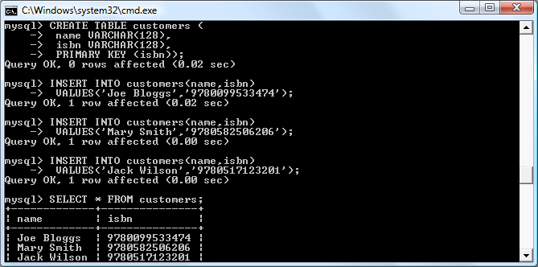
Figure 8-17. Creating the customers table
There’s also a shortcut for inserting multiple rows of data, as in
Example 8-28
, in which you can replace the three separate
INSERT
INTO
queries with a single one listing the data to be inserted, separated by commas, like this:
INSERT INTO customers(name,isbn) VALUES
('Joe Bloggs','9780099533474'),
('Mary Smith','9780582506206'),
('Jack Wilson','9780517123201');
Of course, in a proper table containing customers’ details there would also be
addresses, phone numbers, email addresses, and so on, but they aren’t necessary for
this explanation. While creating the new table, you should have noticed that it has
something in common with the
classics
table: a column called
isbn
. Because it has the
same meaning in both tables (an ISBN refers to a book, and always the same book),
we can use this column to tie the two tables together into a single query, as in
Example 8-29
.
Example 8-29. Joining two tables into a single SELECT
SELECT name,author,title from customers,classics
WHERE customers.isbn=classics.isbn;
The result of this operation is the following:
+-------------+-----------------+------------------------+
| name | author | title |
+-------------+-----------------+------------------------+
| Joe Bloggs | Charles Dickens | The Old Curiosity Shop |
| Mary Smith | Jane Austen | Pride and Prejudice |
| Jack Wilson | Charles Darwin | The Origin of Species |
+-------------+-----------------+------------------------+
3 rows in set (0.00 sec)
See how this query has neatly tied both tables together to show the publications purchased from the
classics
table by the people in the
customers
table?
NATURAL JOIN
Using
NATURAL JOIN
, you can save yourself some typing and make queries a little
clearer. This kind of join takes two tables and automatically joins columns that have
the same name. So, to achieve the same results as from
Example 8-29
, you would
enter the following:
SELECT name,author,title FROM customers NATURAL JOIN classics;
JOIN...ON
If you wish to specify the column on which to join two tables, use the
JOIN...ON
construct, as follows, to achieve results identical to those of
Example 8-29
:
SELECT name,author,title FROM customers
JOIN classics ON customers.isbn=classics.isbn;
Using AS
You can also save yourself some typing and improve query readability by creating
aliases using the
AS
keyword. Follow a table name with
AS
and the alias to use. The
following code, therefore, is also identical in action to
Example 8-29
. Aliases can be
particularly useful when you have long queries that reference the same table names
many times.
SELECT name,author,title
FROM customers AS cust, classics AS class
WHERE cust.isbn=class.isbn;
The result of this operation is the following:
+-------------+-----------------+------------------------+
| name | author | title |
+-------------+-----------------+------------------------+
| Joe Bloggs | Charles Dickens | The Old Curiosity Shop |
| Mary Smith | Jane Austen | Pride and Prejudice |
| Jack Wilson | Charles Darwin | The Origin of Species |
+-------------+-----------------+------------------------+
3 rows in set (0.00 sec)
Using Logical Operators
You can also use the logical operators
AND
,
OR
, and
NOT
in your MySQL
WHERE
queries
to further narrow down your selections.
Example 8-30
shows one instance of each,
but you can mix and match them in any way you need.
Example 8-30. Using logical operators
SELECT author,title FROM classics WHERE
author LIKE "Charles%" AND author LIKE "%Darwin";
SELECT author,title FROM classics WHERE
author LIKE "%Mark Twain%" OR author LIKE "%Samuel Langhorne Clemens%";
SELECT author,title FROM classics WHERE
author LIKE "Charles%" AND author NOT LIKE "%Darwin";
I’ve chosen the first query, because Charles Darwin might be listed in some rows by
his full name, Charles Robert Darwin. Thus, the query returns publications as long as
the
author
column starts with
Charles
and ends with
Darwin
. The second query
searches for publications written using either Mark Twain’s pen name or his real
name, Samuel Langhorne Clemens. The third query returns publications written by
authors with the first name Charles but not the surname Darwin.
MySQL Functions
You might wonder why anyone would want to use MySQL functions when PHP
comes with a whole bunch of powerful functions of its own. The answer is very simple: the MySQL functions work on the data right there in the database. If you were to
use PHP, you would first have to extract raw data from MySQL, manipulate it, and
then perform the database query you first wanted.
Having functions built into MySQL substantially reduces the time needed for performing complex queries, as well as their complexity. If you wish to learn more about
the available string and date/time functions, you can visit the following URLs:
http://tinyurl.com/mysqlstrings
http://tinyurl.com/mysqldates
However, to get you started,
Appendix D
describes a subset containing the most useful of these functions.
Accessing MySQL via phpMyAdmin
Although to use MySQL you have to learn these main commands and how they work,
once you understand them, it can be much quicker and simpler to use a program
such as
phpMyAdmin
to manage your databases and tables.
To do this, type the following to call up the XAMPP main page shown in
Figure 8-18
:
http://localhost/xampp
Figure 8-18. The XAMPP Dashboard
Now click the phpMyAdmin link toward the bottom of the lefthand menu to open up
the program (see
Figure 8-19
).
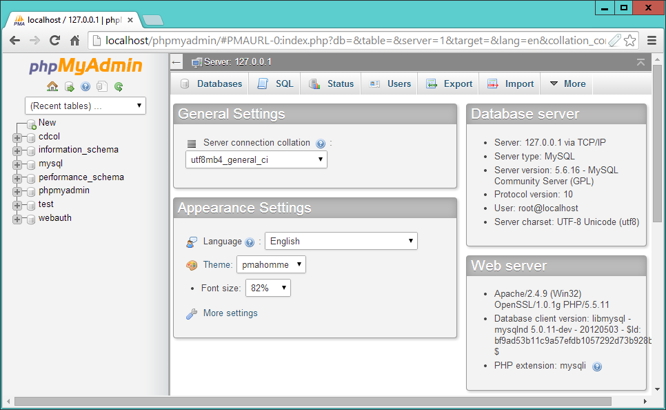
Figure 8-19. The phpMyAdmin main screen
In the lefthand pane of the main phpMyAdmin screen, you can click to select any
database you wish to work with. This will open the database and display its tables.
You can also click New to create a new database.
From here you can perform all the main operations, such as creating new databases,
adding tables, creating indexes, and much more. To read the supporting documentation for phpMyAdmin, visit
https://docs.phpmyadmin.net
.
If you worked with me through the examples in this chapter, congratulations—it’s
been quite a long journey. You’ve come all the way from learning how to create a
MySQL database through issuing complex queries that combine multiple tables, to
using Boolean operators and leveraging MySQL’s various qualifiers.
In the next chapter, we’ll start looking at how to approach efficient database design,
advanced SQL techniques, and MySQL functions and transactions.